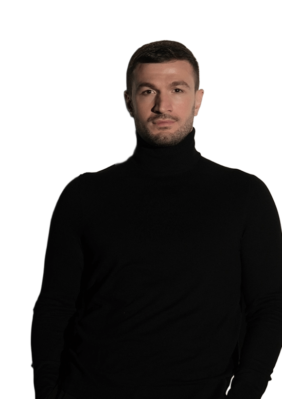

торнике квитатиани
Торнике Квитатиани – дважды финалист Высшей лиги КВН, обладатель «Большого КиВиНа в Золотом» и «Большого КиВиНа в Тёмном», участник шоу «Суперлига» на СТС в составе команды «Борцы», участник шоу «Голос», участник «Comedy Club», певец.
